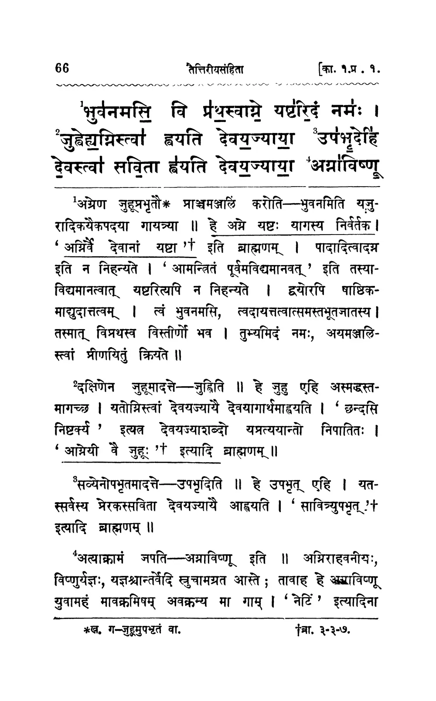

Every text on the site was typed in by someone, and typing brings mistakes. Agents can find where a text disagrees with something it should match. They cannot tell a typing mistake from a reading the tradition really has. This page follows two real corrections from start to finish, to show where that line falls.
The bhāṣya on yajurveda.sanatana.in was built from a typed file, a Word document someone keyed in from the Mysore edition. Nobody has checked that file against the book. This case follows one printed page, Volume I page 66, through the checking. The page shows four kinds of mistake, and each one needs a different fix. One of them must not be "fixed" at all.
The printed book puts a small raised number on a word of the mantra, and the same number at the head of the bhāṣya paragraph that explains it. The typed file kept the paragraph's number and lost the mantra's. So a reader on the site sees a paragraph opening with "1" and nothing in the mantra that it points to.
Fixing that means going back to the print. Once someone is checking the print anyway, every other difference between the print and the typed file comes to light too. Here is the page.

¹ c a cMysore edition, Vol. I pp.66–67, TS 1.1.12. The boxes are drawn by us. The page is shown here as the vidvān sees it.
Round markers are work an agent does by itself. Diamonds are where the work stops and waits for a person. Each step is marked with where it stands today.
The bare "1" is not a one-off. Every anuvāka the typed file covers has the same problem. So the agent opens one job for the printed volumes the typed file came from: Volumes I to III, Kāṇḍa 1 to 2.2. It first reads the running head of every page, "[का. १. प्र. १." and "अनु. १२.]", so it knows which anuvāka each page belongs to.
The reading agent sees the page together with the clean mantra text, and is asked only three things. Which number sits on which word? What do the footnotes say? What are the first few words of each bhāṣya paragraph? It is not asked to retype the page, so it has less room to invent.
Why read every page, and not only where something looks wrong: most of what the typed file says is right, and the only way to show that is to check it against the print. Reading everything lets the vidvān skip what is confirmed and look only at the rest.
For each item there are up to three witnesses: what the reading agent saw on the page, what the typed file says, and what the bhāṣya says about itself (a paragraph names the words it explains, so ¹ "…भुवनमिति" must belong on भुवनमसि). Where they agree, or the agent's checks leave no doubt, the item is settled. Where they do not, it goes to the vidvān. The agent does not pick a winner.
| What was compared | Settled without the vidvān | To the vidvān | Set aside for now |
|---|---|---|---|
| Numbers on mantra words | 1,310 | 392 + 61 sample | |
| Paragraph openings, print against typed file | 1,059 | 368 | 74 that match no paragraph |
| Footnotes | 434 | 958 source references, such as "ब्रा. ३-३-७", to be linked later |
The sample: one in twenty of the items that agree is shown to the vidvān anyway, so we learn whether "all agree" can be trusted.
A vidvān's hours are the scarcest thing in the project. Before any of them are spent, a member of the team goes through 50 pages by eye against the print, to see whether the agent's sorting holds up.
The agent builds three review pages for each praśna: numbers, footnotes and openings. Each item shows the printed page itself, with the footnote band cut out and enlarged where that helps, so the vidvān checks against the book rather than against us. The differing letters are marked in both readings.
The buttons are the ones on the live review page. "Docx" is the typed file.
This is the step that cannot be handed to an agent. The four cases on pages 66 and 67 each call for a different ruling.
| Printed page | दक्षिणेन |
| Typed file | दक्षिणणेन |
| Reading agent | दक्षिणेन |
| Printed page | आघारमाघारयति |
| Typed file | आघारमाघारयति |
| Reading agent | आधारमाघारयति |
| Printed page | जुहूप्रभृतौ * |
| Footnote | * ख. ग—जुहूमुपभृतं वा. |
| Typed file | जुहूप्रभृतौ (no footnote) |
| Reading agent | जुहूपभृतौ |
| Printed page | * ग—अध्वकर्तृकः. [ … ? ] |
| Typed file | The footnote is not there at all |
| Reading agent | ग—अध्वर्तकः. [अध्वर्तकः ?] |
The agent turns each ruling into a correction entry, rebuilds the bhāṣya from the typed file plus the corrections, and republishes the site. On TS 1.1.12, the word भुवनमसि becomes a link to paragraph ¹, paragraph ² reads दक्षिणेन, and जुहूप्रभृतौ carries a small mark that opens the manuscript reading.
The rebuild refuses a correction that does not fit. If the words it quotes are not found exactly once, or the place it moves text to is not empty, it stops and says why.
The same steps fixed the other bhāṣya on the site, Sāyaṇa's, which has no scans. There the agent compares the typed file with Sāyaṇa's own headings and closing lines, and with the mantras each block quotes. Some anuvākas looked empty. Most of them were not.
The Mahābhārata on sanatana.in is typed from the text Nīlakaṇṭha commented on, with his Bhāvadīpa, and there are no page scans to check it against. Two other editions are available: the Critical Edition from the Bhandarkar Oriental Research Institute in Pune, and M.N. Dutt's text and translation. Neither one is our text, so a difference is not proof of a mistake. This case follows one chapter, Mahāprasthānika Parva 3, where Yudhiṣṭhira will not enter heaven without the dog.
Indra tells Yudhiṣṭhira to leave the dog behind. Yudhiṣṭhira answers that he will never abandon one who is frightened and devoted to him: that is his vow. This is the verse as the site had it until 27 September 2026.
भीतं भक्तं नान्यदस्तीति चार्त प्राप्तं क्षीणं रक्षणे प्राणलिप्सुम्।
प्राणत्यागादप्यहं नैव भोक्तुं यतेयं वै नित्यमेतद्ब्रुतं मे॥१२॥
"…even at the cost of my life I will never try to eat him: this is my constant vow."
भोक्तुं means "to eat". The sense needs मोक्तुं, "to abandon". ब्रुतं should be व्रतं, "vow", and चार्त should be चार्तं. These three slips were among the errors sent in to the typing team, who corrected them by hand.
Here the agent's job is to find mistakes like this one before a reader has to, and to point the typing team at them.
Readers on sanatana.in report a verse that looks wrong. The typing team checks it and corrects the text. Between July and September 2026 they made 104 corrections to the verses, mostly from errors sent in, verse 3.12 among them.
The three texts number their verses differently, so the agent finds each verse by its words, never by its number. Our 3.12 is Dutt's 310.11. The Critical Edition has no such verse at all: it goes from Yudhiṣṭhira's verse 11 straight to Indra's reply.
The Critical Edition differs from our recension on thousands of words, and those are real variant readings. So one edition differing proves nothing. The agent raises a firm flag only when both editions read the same word, they differ from ours by a letter or two, and the difference is not a spelling convention. Conventions such as सन्निधौ for संनिधौ, कर्म्म for कर्म, or दत्त्वा for दत्वा are never flagged.
| Flag | When | Raised across the 18 parvas |
|---|---|---|
| Both editions | Both read the same word, against ours | 5,468 |
| One edition | One differs, and the other has no matching verse | 5,466 |
| Not flagged | One edition reads as ours. That is a variant, not a typo |
Before anyone's time is spent, the agent runs its check on the text as it stood in July and compares the result with the 104 corrections the typists made since.
| Of the 104 known corrections | Verses |
|---|---|
| Caught, both editions agreeing | 48 |
| …with the editions' reading exactly the typist's fix | 46 |
| Caught, one edition only (verse 3.12 is one of these) | 14 |
| Missed | 42 |
So the check finds about six in ten of the mistakes readers find, and it does not replace them. The misses include plain typos such as भामसेनो for भीमसेनो, so the check still has room to improve.
The agent builds a review page: our text, the editions' reading, and which edition says what. There is one shared online page, and one file per parva for reviewers who work offline on a phone. An offline reviewer's decisions are sent back as a file through the phone's share menu.
A real open flag, from the verse just before 3.12. The buttons stand for the three decisions the page records.
The two flags in this chapter show why a person still has to read.
| Our text | त्यक्ष्यामेनं |
| Critical Edition | त्यक्ष्याम्येनं |
| Dutt | त्यक्ष्याम्येनं |
| Our text, before | चार्त … भोक्तुं … ब्रुतं |
| Critical Edition | has no such verse |
| Dutt | चात … मोक्तुं … व्रतं |
Today the typists apply corrections by hand. The next piece gathers the reviewers' decisions and shows where two reviewers disagree, so a person can settle it. It then applies the agreed fixes to the text, one commit for each parva, so every change can be traced to who decided it.
For both texts.
The pipeline lives in dharmasastra-gcp/complete_pipeline_yajurveda. Where it stood on 15 October 2026 is in docs/TS_review_handoff_2026-10-15.md, and that note wins where it and this page differ.
stage1_ocr/scan_headers.py reads the running head of every page, 25 heads to a call, and carries the anuvāka forward. It covers 3,869 text pages across ten volumes. Kāṇḍa 4 (Vols. VI–VII) has no scans.stage1_ocr/scan_marks.py sends each page with its anuvāka's clean text to gemini-3.5-flash in Gemini Batch mode, one job per volume. Batch mode is half the price, has no rate limits, and every page is read once. Each answer is checked: the word must exist in the clean text, numbers must run in order, and each number may occur once per anuvāka.stage2_analysis/pratika_anchor.py places a number from the words its paragraph names. It placed 90% of them; by chance alone it would place 7%. Grades: firm, ordered, weak. A short pratīka that occurs twice is graded ordered, never firm, because in the pilot the scan was right both times the two disagreed.review_queue, review_page, review_footnotes and review_openings build a static site for each praśna, about 250 KB each. It is served on GitHub Pages under yajurveda.sanatana.in/review/TS/. Decisions are kept in the browser under one key and downloaded as decisions_TS_<date>.json.stage4_integration/ts_bhashya.py regenerates the site's bhāṣya fields from the typed file and data/corrections/TS/<commentator>.json. The entry types are joint, drop_text, move_text and split_text, and each one carries evidence. Regenerating with no new corrections changes nothing.mbh_src/qa/witness_check.py joins each verse of xml/NN.xml to the Critical Edition (BORI, in dharmasastra-gcp/workbench/critical-edition) and to Dutt (mahabharata/mn_dutt_processed.json) by shared words, never by number. It compares word by word and keeps a difference only when it is typo-sized (similarity of 0.75 or more). canon() collapses spelling conventions first.qa/findings/witness/NN.jsonl, in the shape QA_PROPOSAL.md §3.3 sets out. A both-edition flag has severity review, a one-edition flag info. review.tsv lists them all.--score 228512a runs the check on the text as it was at that commit and counts the corrections made since. --control measures the catch on the site's open verse reports: on 29 September, 111 of 258.qa/witness_report.py builds the shared review page and per-parva offline files. Each decision is fix, no or open, with the reviewer and the time.{"from": "6.4.2",
"to": "6.4.3",
"at": "अत्रोपावहरेदिति विधिं सूचयन्",
"evidence": "docx has no text at marker 6.4.3; its commentary runs on
inside 6.4.2's block (9,100 chars, about twice the norm). Quotations
before this line match 6.4.2's saṃhitā and cite सं. का. ६ प्र. ४ अ. २;
from the next paragraph they match 6.4.3 and cite अ. ३."}
Yajurveda counts are from the TS review build of 15 October 2026 (Vols. I–III). Mahābhārata counts are from witness_check.py run on 17 October 2026 against xml/ at HEAD (findings) and since commit 228512a, 4 July (the 104 corrections). Readings in the four cases were checked by eye against the scans of pp.66–67. The editor's bracketed conjecture in the p.67 footnote is left for the vidvān to read.